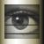
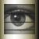
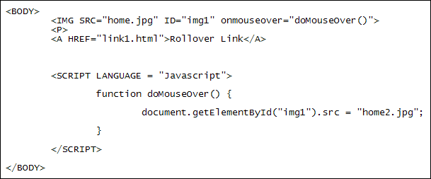

Javascript Rollover
Two more useful events are onMouseOver and onMouseOut. (You can have the two words in all lowercase, if you prefer.) As their names suggest, you want something to happen when the mouse pointer moves over or away from something like an image or a hyperlink. Test it out. Move your mouse over the image. Then move it away:

Create a new web page for this from your template. Use the two images that you used previously (right click each one, and then select "Save Image As" in Firefox, or "Save Picture As" in Internet Explorer). Save them to the same folder as your new web page:
 

For the HTML, add the following between the two BODY tags:
<BODY>
<P><IMG SRC="home.jpg" ID="img1"></P>
<P><A HREF="link1.html">Rollover Link</A></P>
</BODY>
So we have an image with the ID img1. The source is home.jpg. We also have a hyperlink beneath a P tag. When the mouse pointer is over the image we want to swap the it for the one called home2.jpg. When the mouse pointer moves away, we'll swap it back. We'll then do the same with the hyperlink.
Add the following to your IMG tag:
<IMG SRC="home.jpg" ID="img1" onMouseOver="doMouseOver()">
We've added the onMouseOver event to the image. After an equal sign we have the name of the function we want to call.
Move your two SCRIPT tags to the BODY section, right at the end. Now add the doMouseOver function:

The code for the function is just one line:
document.getElementById("img1").src = "home2.jpg";
We're using getElementById. Between the round brackets we have the ID from the IMG tag we set up earlier. After the round brackets we have the SRC (source) property. This tells Javascript that we want to access the source property of an HTML element called img1. To the right of the equal sign, we have the name of the image we want to use as the new SRC property. The code above will work if the image is in the same folder as the web page. If it's in a separate folder (one called images, for example) then we could do this:
document.getElementById("img1").src = "images/home2.jpg";
So try it out. Save your work and load the page in a browser. You should see the image change from the shutters to the eye.
However, when you move your mouse away the eye image will still be there. To remedy that, add the following to the IMG tag:
<IMG SRC="home.jpg" ID="img1" onMouseOver="doMouseOver()" onMouseOut = "doMouseOut()">
We've added an onMouseOut event. This time, the event calls a function with the name doMouseOut.
To switch the image back to the shutters, add the following function to your code:
function doMouseOut() {
document.getElementById('img1').src = "home.jpg";
}
Again, it's just one line of code. The only difference is the part after the equal sign - we're setting the image back to home.jpg, which is what it was in the first place.
Save your code and refresh the page in your browser. You should see the shutters turn into an eye when you move your mouse pointer over the image, and you should see the eye turn back to the shutters when the mouse moves away.
Now add the onMouseOver and onMouseOut code to your hyperlink:
<A HREF="link1.html" onmouseover="doMouseOver()" onMouseOut = "doMouseOut()">
Rollover Link
</A>
Save the changes and refresh in your browser. You should see the rollover effect happen when you move your mouse pointer on then away from the hyperlink.
In the next part, you'll see how to animate the rollover effect you coded above. We'll use Javascript timers to do this.